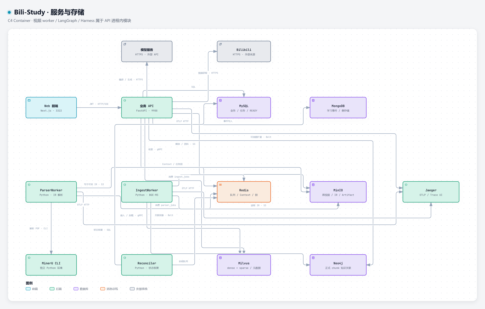
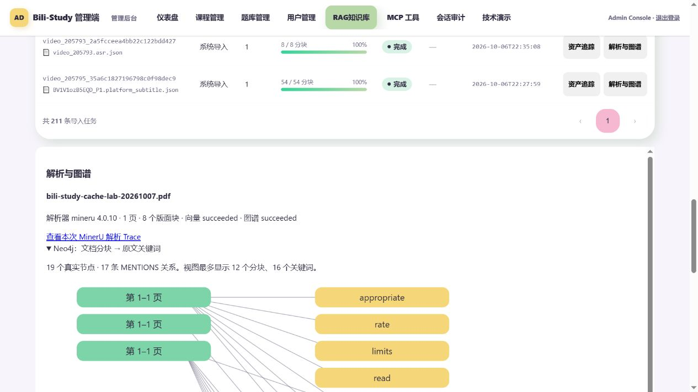
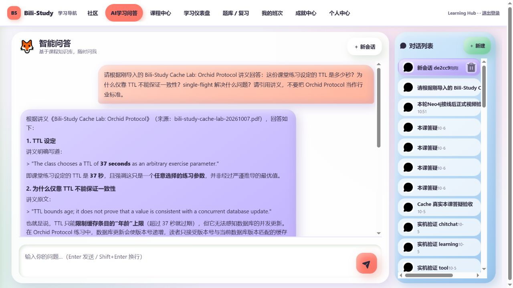
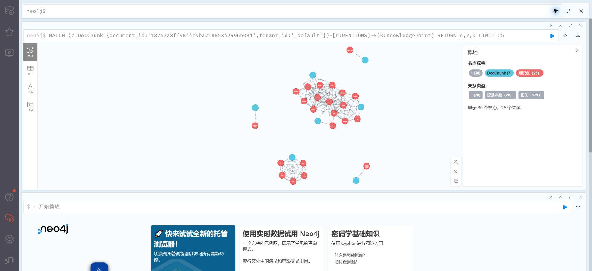
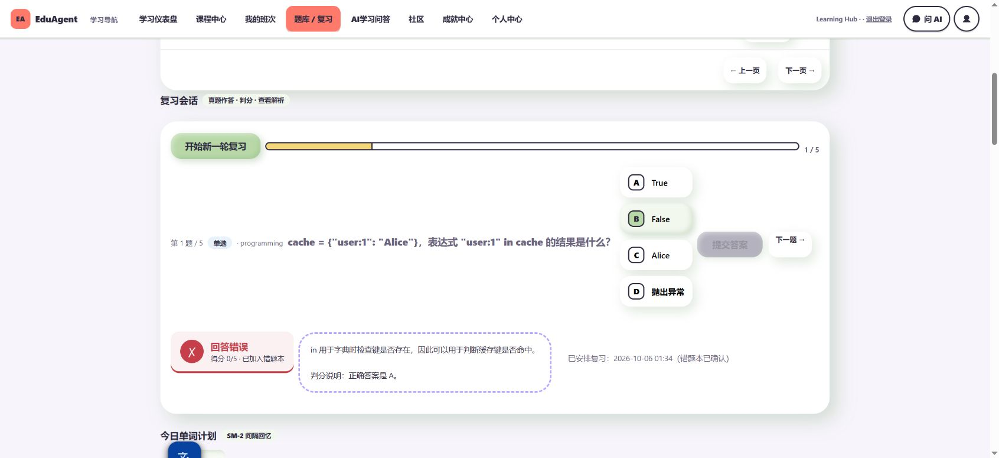
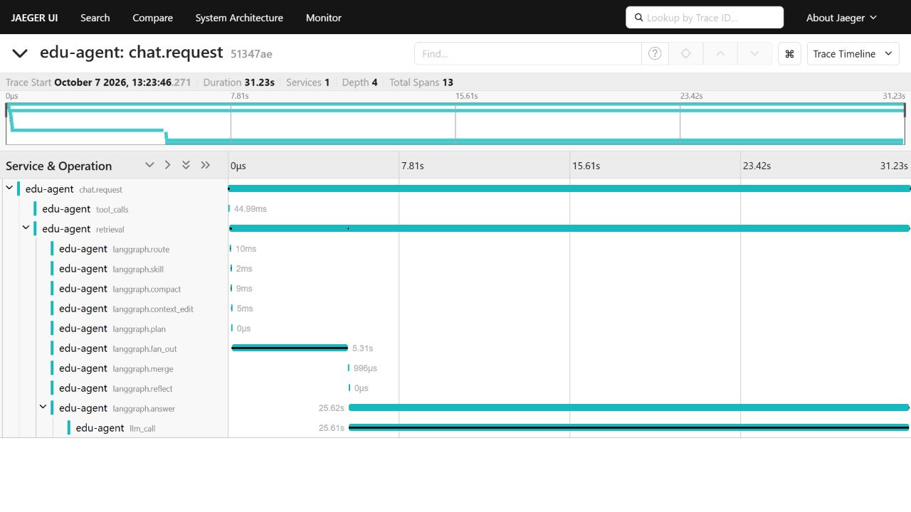
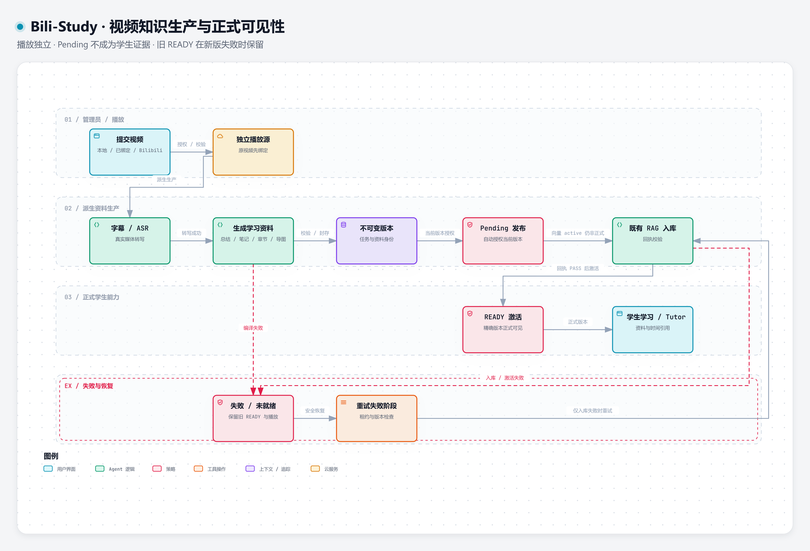

账号与个人画像
注册、登录、刷新 Token、角色识别、个人资料、学习目标/身份/偏好与学员档案
登录与权限已有实证；资料接口可读Bili-Study：导入内容 → 总结、笔记、章节、导图与习题 → 学生学习 → 带来源的课程答疑。
视频字幕 / ASR · PDF / MinerU
↓ 版本化 Artifact / Document IR
↓ BGE-M3 · Milvus 混合检索
↓ 学习资料 · 练习 · Course Tutor
Next.js / React + 静态业务页 · FastAPI / Python 3.11
LangGraph 九节点 · SixNodeHarness · MCP
BGE-M3 · Milvus · RRF · reranker
MinerU · Neo4j · OpenTelemetry / Jaeger
MySQL · Redis · MongoDB · MinIO

| 层 | 实现与职责 |
|---|---|
| 页面与业务 | Next.js / React 与现有静态页面；FastAPI 提供鉴权、课程、学习、生产任务与 SSE 问答；MySQL 保存业务和正式发布权威。 |
| 内容理解 | yt-dlp / ffmpeg / ffprobe 获取与验证媒体，原生字幕或 ASR 转写；MinerU 解析 PDF；结构化 Artifact、Document IR 与来源信息进入既有入库链。 |
| RAG 与图谱 | BGE-M3 dense / sparse → Milvus Hybrid → RRF / reranker → 来源引用；Neo4j 保存文档、视频、章节、知识点关联和有限邻居扩展。 |
| Agent | LangGraph 控制流程，SixNodeHarness 实现核心节点；MCP 工具、上下文整理、压缩、缓存、个人记忆与 HITL / checkpoint 有各自服务边界。 |
| 运行与数据 | Redis 承载任务协调、队列、锁和上下文；MinIO 保存资产；MongoDB 承载事件；OpenTelemetry / Jaeger 展示执行 Trace，Prometheus 与日志辅助诊断。 |
以下为项目既有实机验收截图。它们证明对应请求和当时运行结果；截图中的时延不是性能基准。





本地上传、已绑定视频、Bilibili 来源复用同一套任务。字幕 / ASR → 总结 / 笔记 / 章节 / 导图 / 习题 → 自动发布与 RAG；失败可重试，旧 READY 版本继续可用。

这是原页面的离线接口快照，已制作脱敏副本。登录、写操作和消息为回放；不含真实视频或在线模型。旧快照可能显示历史未就绪状态，不能据此判断当前服务。真实执行证据见上方。
离线快照 · 页面交互回放
离线快照 · 页面交互回放
离线快照 · 页面交互回放
离线快照 · 页面交互回放
离线快照 · 页面交互回放
离线快照 · 页面交互回放
离线快照 · 页面交互回放
离线快照 · 页面交互回放
离线快照 · 页面交互回放
离线快照 · 页面交互回放
离线快照 · 页面交互回放
离线快照 · 页面交互回放
离线快照 · 页面交互回放
离线快照 · 页面交互回放
离线快照 · 页面交互回放
离线快照 · 页面交互回放
离线快照 · 页面交互回放
离线快照 · 页面交互回放
离线快照 · 页面交互回放
离线快照 · 页面交互回放
离线快照 · 页面交互回放
离线快照 · 页面交互回放
离线快照 · 页面交互回放
离线快照 · 页面交互回放
离线快照 · 页面交互回放
常用页面直接展开；下面按中文功能名提供其余页面。详情页使用快照对应的对象；未带有效对象的编辑/退款页可能显示合法空态。
依据当前源码、242 项运行 OpenAPI 操作与原始验收记录。接口存在、读取成功和完整业务通过分别标注。本轮 17 项合法参数读取冒烟均成功，不将它们扩写为所有写流程通过。
注册、登录、刷新 Token、角色识别、个人资料、学习目标/身份/偏好与学员档案
登录与权限已有实证；资料接口可读分类、关键词、价格/交付模式筛选、排序分页、系列详情、班次、模块/课次与大纲
页面/接口存在；真实课程与历史代表课须区分报名关系、班次访问鉴权、课程进度快照、模块/课次完成态、已下架课程已有报名兼容
真实学生免费报名/学习已验收授权播放、Range、播放进度保存、暂停/拖动/章节跳转；原视频与派生资料独立
真实媒体已验收Summary、AI 笔记、带时间字幕、章节；节点/连线导图、展开子节点、节点详情与回看
多视频已有闭环；导图当前有独立节点渲染器StudyContext 授权、课程背景、同课历史、正式版本精确检索、视频引用时间跳转、跨课/越权拒绝
P1/P3/P26及新增视频已有实证；不是完整 Agent 工具循环SSE 流式回答、非流式问答、多会话、历史、删除会话、引用、检索元数据、失败/降级提示
真实知识回答与历史持久化已有实证正式题库、题型选择、按课程/薄弱知识点取题、正式版本、学生权限、题库专项练习
已有实机题库闭环；本次题库列表可读即时判分、解析、幂等作答、冲突答案拒绝、错题记录、到期复习、原题重做、复习时间
真实判错/重做已有实证；本次错题列表可读编译阶段生成本视频相关题，绑定课次/题库，随正式版本提供，支持补产习题
2026-10-07视频验收含 exercise_count=4；不代表所有旧课有题今日新词/到期词、SM-2 质量评分、等级进度、打卡/正确率
前后端已接线；本次进度接口可读，整条学习闭环需专项复验挑战列表/详情、样例运行、隐藏用例提交、分数与递进提示
有实现及题目接口；Piston外部服务和完整执行尚需复验；非 Python fallback 含启发式模拟按话题/等级取题、分步反馈、整题规则讲解
目前3道内置规则题；不是通用数学推理/题库平台视频打点、学习时长/连续学习、作业提交、考试作答、正确率、掌握度、学习轮次/下一步行动回执
学习/作答链已有实证；本次看板与汇总可读；闭环长期收益未证明个性化路径、下一步学习推荐、难度/兴趣反馈、Neo4j先修路径与环诊断
代码及API存在；当前完整路径质量与新学员效果需复验课程图、学科图、个人掌握度着色、前向/后向先修链
API存在；依赖实际知识点/图谱数据；与视频导图区分版块/热度/关键词、发帖编辑、帖子详情、评论/回复、点赞、收藏、作者和管理员边界
前后端已接线，写流程本轮未重验徽章解锁进度、积分/等级/流水、日周月总排行榜、合法动作触发徽章
本次徽章、积分、排行榜读取成功；不能把手动加分当学习效果课程收藏/取消、已报名课程评价、我的订单/券/班次
本次收藏/券/订单可读；评价与取消等写路径需复验系列→班次→模块→课次 CRUD，资源管理、章节管理、上下架、回收站恢复
生产管理员页已使用；不现场演示物理删除本地分片上传、服务端 ffprobe/字节与播放格式校验、已有视频身份校验、Bilibili链接/分P、字幕优先/ASR
真实管理员页面已跑通多类来源；任意平台链接不保证获取创建任务、自动刷新、真实阶段/失败原因、worker/租约、重试、预览、驳回/审核API、自动发布入库
已有正式生产闭环；历史人工审核接口保留不可变 Artifact、SHA/lineage、明确重编、重复点击幂等、旧版本保护、READY唯一可见性、ANN前精确scope
首次 pending 反例与 ready切换已有实证及回归题库/题目CRUD、五类题型、答案解析编辑/预览、批量导入校验/幂等报告、学生发布/退役、考试组卷/题目快照冻结
题库导入和学生发布已有实证；组卷整链待专项复验分页搜索、角色分布、账户启停、角色调整、学员资料
管理页/API存在；角色/启停写操作需专用对象验收用户指标、课程/题库入口、学习事件分析、交易运营汇总；只读会话/历史审计
基础设施读取成功；其他聚合数据需按来源复核优惠券模板/领券/适用券、无限库存但每人一次；Zero-Pay订单 paid/报名active且不建payment_record；零元携券拒绝
已有真实验收与回归服务端金额/库存/幂等、订单详情/取消；支付轮询/回调闸门/对账；退款申请撤销/HITL审批；工单/申诉/满意度
订单查询可读；真实支付渠道未验收；退款/工单有实现和部分过渡路径，不做真实资金演示PDF、MD、TXT、DOCX；SourceAsset身份，MinerU文本PDF/OCR，Document IR页/块来源，解析预览
真实PDF/MD已有链路证据；复杂公式/表格/VLM未验收ImportCommand、SourceAsset、IR、chunk准备、BGE-M3、Milvus dense/sparse、tenant/generation/lineage；worker回执/幂等/恢复
真实新视频/PDF可召回；保留主RAG，无第二套索引Hybrid、RRF、中文分词、reranker、上下文预算、课程权限/元数据过滤、来源引用；轻量关键词扩展
真实RAG已有实证；当前HyDE不是完整LLM假设文档；独立reranker sidecar降级、本地CUDA工作collections、检索preset、管理员搜索、审计、任务/分区、文档与graph预览
正式页面/API存在；重建/分区删除是管理写能力，本轮不执行正式视频/章节/知识点/canonical chunk，文档MENTIONS/RELATED，版本身份；独立图同步；普通RAG有限邻居扩展
PDF/视频图谱实证；精确视频Tutor不跨图回填；邻接不是推断先修route/skill/compact/context_edit/plan/fan_out/merge/reflect/answer，问候短路、反思循环，六个核心节点委托Harness
真实九节点Trace已验收；不是两条独立流水线，不是每请求九次模型调用意图分流、知识检索、只读NL2SQL、MCP/计算器/学习工具、并行分支汇总、答案/工具回执校验
有接线和部分真实请求；并行任务不是已证明多个自主LLM子Agent稳定前缀、前缀签名/缓存统计、context_edit轻量删冗余、token水位、compaction分预算压缩、最近轮保护
代码与观测接口存在；不能无实测宣称缓存命中率或成本收益偏好/事实提取、异步记忆队列、同步提取、个性化注入、user_memory_event事件HEAD、历史/rewind、Dream整合
当前配置启用；曾有远端提取SSL降级，跨会话提取成功与Dream需新实机证据Redis thread checkpoint/TTL/HMAC；人工确认pending→confirm/reject→resume；工具分类/角色/风险/超时/熔断；退款审批图
有实现与有界测试；高风险写工具、进程崩溃恢复不能由普通Chat通过推断Chat根span、九节点/Harness属性、retrieval/LLM/tool；视频阶段、PDF解析/embedding/load/Neo4j跨worker父子Trace
真实Chat/PDF/视频Trace已有证据；旧内存Trace可能重启丢失请求与耗时指标、缓存/上下文联合看板、OTel快照、按Trace观测事件、结构化日志；六存储与Redis队列/锁/熔断/worker心跳
管理端快照本次可读；模型/队列具体运行需对应数据证据JWT/bcrypt、admin/manager/student守卫、报名/对象/tenant scope、SSRF/SQL校验、限流/并发/token预算、错误隔离、签名与幂等
DEBUG=false及越权边界已有实证；不是整体安全认证模型/存储readiness、原Redis/Jaeger容器恢复、MinerU/Neo4j入口、文档worker心跳、隐藏启动、日志与有界drain停止
原生环境已实测；完整空环境Compose尚未验收页面预览是匿名化接口快照；真实业务证据见实机截图。运行本项目需自行配置模型、存储与权限。